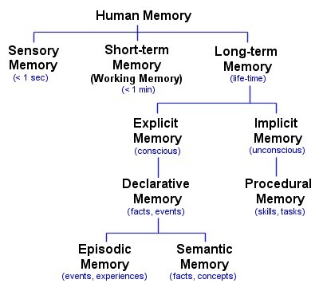
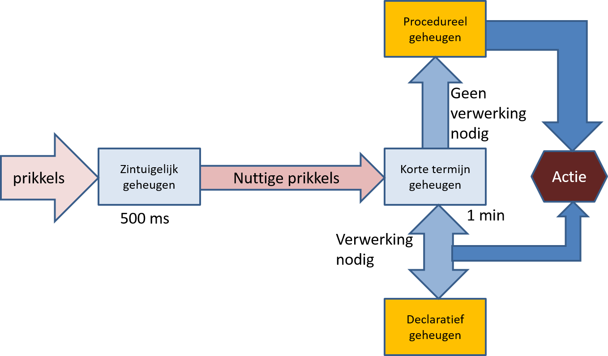
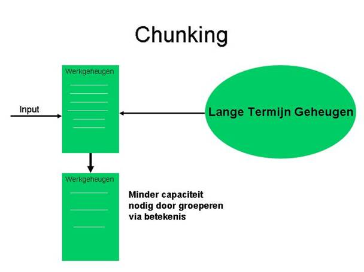
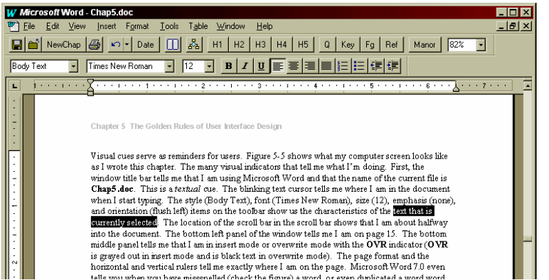
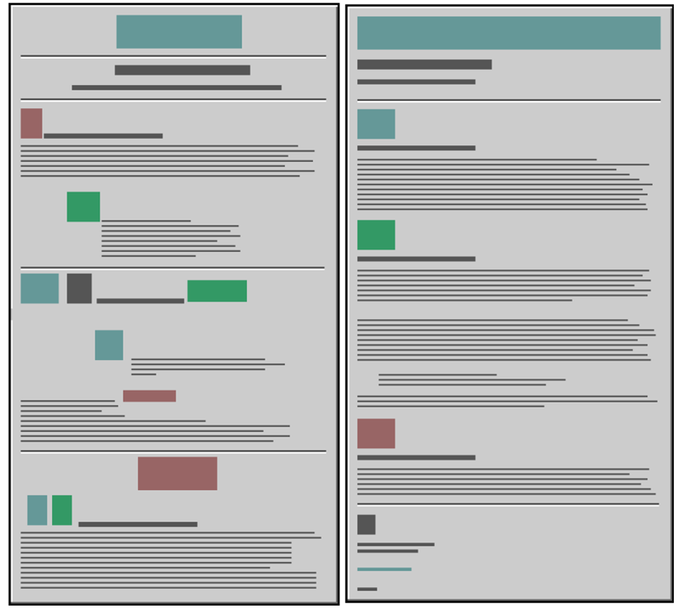
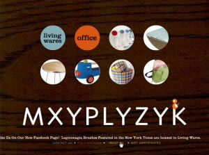

Cognitieve aspecten
Wat?
De mate waarop mensen in staat zijn gebruik te maken van opgedane kennis. Het geheugen en de werking van de geest hebben een zeer grote invloed op de manier waarop u systemen ontwerpt. U dient ernaar te streven het energieverbruik in geheugen en geest zo klein mogelijk te houden.
Als u hier overmatig gebruik van maakt, ontstaat een hoge mentale belasting (cognitive load).
Structuur
Dit is geen wetenschappelijke benadering maar een benadering die goed genoeg is om de effecten uit te leggen.
Het geheugen bestaat enerzijds uit een zintuigelijk geheugen, een korte termijngeheugen en een lange termijn geheugen. We kunnen dit voor een deel vergelijken met het werkgeheugen (zintuigelijk en korte termijn) van een computer en de harde schijf (lange termijn). Er zijn echter belangrijke verschillen:
- De verwerking via het zintuigelijk geheugen verloopt automatisch en onbewust;
- Het visuele geheugen (iconic memory) werkt zeer snel, het verbale geheugen is trager;
- Impliciet en procedureel geheugen werken met een minimale inspanning (quasi geen - de automatische piloot);
- Het korte termijngeheugen heeft een zeer beperkte omvang;
- Het korte termijngeheugen werkt volgens het FIFO principe en is vergelijkbaar met een stack of een queue;
- Het lange termijngeheugen is quasi onbeperkt in omvang;
- Het werkgeheugen verliest altijd zijn informatie in de tijd, activiteit is niet nodig (er is geen stroom nodig en ook geen stroomonderbreking);
- Het lange termijngeheugen behoudt zijn informatie (crashen is verbonden met sterven).

Een gedetailleerd schema van de verschillende onderdelen van het geheugen.
Het korte termijngheugen verzamelt alle indrukken die u opdoet en waarvan u de betekenis nog moet bepalen. Deze betekenis bepaalt u vooral door associaties te maken met informatie die in het beschrijvende deel van het lange termijngehugen zit (het declaratieve geheugen).
Informatie, opdrachten, werkwijzen waarbij u die betekenis niet meer moet achterhalen, gaat direct naar het procedurele geheugen en wordt uitgevoerd. Dit laatste proces is veel sneller dan het proces via het declaratieve geheugen. Als u kunt werken via het procedurele geheugen, werkt u op "automatische piloot" en dat is energie-efficiënt.

Dit is een model voor de werking van het geheugen. Dit is niet volledig correct noch integraal wetenschappelijk verantwoord. Het is echter voldoende om te begrijpen wat voor het ontwerp van de user interface belangrijk is.
U krijgt massa's prikkels te verwerken. Het zintuigelijk geheugen pikt deze op, verwerkt ze quasi automatisch en geeft enkel wat nuttig is door voor verdere verwerking.
Het korte termijn geheugen verwerkt deze overblijvende prikkels verder. Als u de betekenis niet meer moeten ontdekken, komen ze in het procedureel geheugen en leiden direct tot actie.
Voor andere prikkels zoekt u overeenkomstige kennis, patronen of de betekenis ervan door associatie met wat u al kent. Hier speelt het declaratief geheugen een cruciale rol. Op die wijze komt u terug tot actie.
Chunking
Het werkgeheugen of korte termijn geheugen heeft maar een beperkte capaciteit. Deze beperking kunt u omzeilen door de informatie in pakketjes te gebruiken (u biedt die zo aan). Een telefoonnummer van 9 cijfers onthouden is bijna onmogelijk. De informatie verdelen over groepen (bv 3 cijfers en dan drie groepen van 2) maakt dit wel haalbaar. De informatie past nu in het korte termijn geheugen en kan als geheel naar het lange termijn geheugen overgebracht worden. Met 9 afzonderlijke cijfers is dat niet haalbaar.

Regels en richtlijnen

- Gebruik zoveel mogelijk het procedurele geheugen voor manipulates (slepen en laten vallen, knippen, plakken, opslaan, soorten icoontjes, plaats elementen ...). Respecteren van standaarden is een belangrijk hulpmiddel. Directe manipulatie is een goed hulpmiddel;
- Gebruik duidelijke labels voor velden, buttons ...;
- Gebruik linkteksten die de bestemming aangeven (niet 'klik hier');
- Geef indien mogelijk visuele hints (dit is een vorm van feedback);
- Voorzie veel feedback;
- Gebruik duidelijke structuren in teksten - dit heeft ook invloed op 'lezen op het scherm'.

- Plaats geen overtollige informatie op het scherm (minimalistisch ontwerp).
Voorbeelden

Dit is een visuele hint voor geselecteerde tekst. De gebruiker hoeft niet te onthouden wat geselecteerd is.

De linkertekst heeft een zwakke structuur, de rechtertekst is zoals het hoort.

De gebruiker moet 'hoveren' om de betekenis van de iconen te kennen. De mentale belasting is zeer hoog en de gebruiker vergeet zeer snel wat hij zag. Dit is 'mystery meat' navigation.
Op de oude website van de NMBS stond het logo (link naar de homepage) rechts in plaats van links. Dit houdt in dat de gebruiker moet leren (telkens opnieuw want onthouden lukt niet) dat het logo niet op de verwachte plaats staat.
Referenties
Dit is uitgebreide discussie over het geheugen en de werking. 
Who am I? sciencemuseum UK 
Created with the Personal Edition of HelpNDoc: What is a Help Authoring tool?